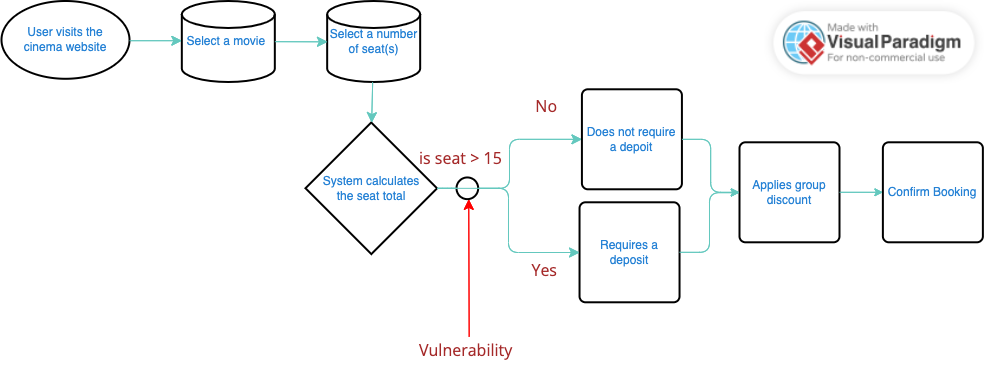

The Open Web Application Security Project (OWASP) is a non-profit organisation that plays a pivotal role in cybersecurity. Its mission, of paramount importance, is to raise awareness of critical vulnerabilities in web applications. A diverse group of contributors, from industry security experts to experienced developers, collaborate on open-source tools and applications to document their discoveries. OWASP’s unwavering commitment to exposing security weaknesses and vulnerabilities fortifies the overall security of the web, making each cybersecurity professional and developer's work more impactful (OWASP, 2021b; OWASP, 2021c; Sonarsource, 2021).
OWASP has unveiled its annual compendium of the top 10 web application security risks, featuring a significant addition, the A04:2021-Insecure Design category. This category, a new and pressing concern, addresses the 'missing or ineffective control design', which leads to design flaws within the application system due to inadequate development measures. According to OWASP (2021a), Insecure Design denotes the presence of design flaws in the application system that are introduced during its initial development phase.
OWASP (2021a) presents a scenario involving a local cinema chain that offers a discount on group bookings for up to 15 guests without requiring a deposit. The vulnerability in this system lies in the lack of input validation for the number of seats specified by the user. This oversight allows malicious actors to exploit the system by exceeding the specified seat limit or booking multiple cinemas simultaneously. Such actions could lead to significant financial losses for the cinema chain, highlighting the severity of this security lapse.
Below is a simple UML flowchart that illustrates how malicious actors could potentially exploit the vulnerability in the scenario.

Figure 1: A UML flowchart showing the vulnerability of the cinema group booking and discount process (Visual Paradigm, 2019).
Peers Response
Peers response body content
by Sudesh Naidoo - Wednesday, 8 May 2024, 7:06 PM
Hi Amrol,
Your OWASP security risk, Insecure Design is very pertinent to the secure security design. If we look at CLASP OWASP secure design methodology (SecureSoftware. 2005), it tries to cover insecure coding. In terms of Insecure design for architecture we can use known architectural patterns as discussed in unit2 lecture cast.
Looking at your design flow chart it clearly shows the user flow, but the vulnerability is difficult to work out from the diagram itself and the explanation is required to clarify. I would suggest a secondary actor input where you have a pointer to the vulnerability and possibly method of infiltration used to exploit the insecure design.
It is interesting to see in the scenario example you show how important it is for an external security consultant with an external viewpoint is, to an implementation or even security training and awareness for teams coding.
References:
SecureSoftware. (2005). https://cwe.mitre.org/documents/sources/TheCLASPApplicationSecurityProcess. CWE - Common Weakness Enumeration. https://cwe.mitre.org/documents/sources/TheCLASPApplicationSecurityProcess.pdf
by Anja Kosar - Monday, 13 May 2024, 4:20 PM
Hello Amrol,
Thank you for your post and highlighting A04-2021 – Insecure Design. It can be said that this is one of the most important, if not the core aspect of development. Today's fast-paced development settings frequently overlook security as an afterthought. Threat actors target applications with weak security measures because they are easy targets. It's crucial to be aware of the security dangers and vulnerabilities that come with contemporary software development because they may be distributed along with the programs.
In the early phases of the SDLC, businesses must adopt a sophisticated approach to security management. If not, it would take a lot of work to change the fundamental choices later on. An application's susceptibility to vulnerabilities known as "Insecure Design" results from an inadequate level of security caused by an improper assessment of business risk during the design process.
Your UML flowchart displays a step-by-step illustration on how actors could potentially exploit the vulnerability in the given scenario, a scenario which many of us use, or have done in the past.
References:
QAwerk. (n.d.). Insecure Design Vulnerability: Explanation and Examples. [online] Available from: https://qawerk.com/blog/insecure-design/. [Accessed on 13 May 2024]
OWASP (2021). Insecure Design - OWASP Top 10:2021. [online] owasp.org. Available at: https://owasp.org/Top10/A04_2021-Insecure_Design/. [Accessed on 13 May 2024]